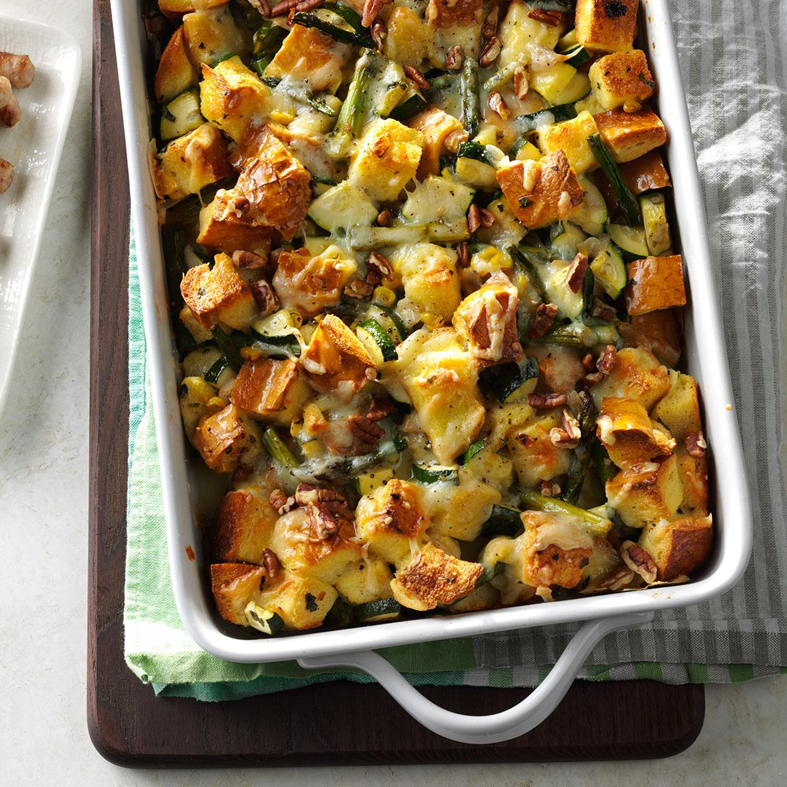

Strata

Description
This is one of my favorite recipes to make for a family gathering. Fully, cheesy and nutritious, you are sure to enjoy this dish!
Take care with this recipe, it came not from a grandmother, but the internet
Ingredients
1.5 Cups Shredded Sharp Cheddar
1.5 Cups Shredded Gouda Cheese
3/4 Cup Chopped Roasted Red Pepper
12 Ounce Loaf French Bread
Steps
Set out a large mixing bowl and a 9X13 inch (3 quart) baking dish. Grease the baking dish. Chop all necessary ingredients.
In the mixing bowl, add the eggs, milk, salt, ground mustard, and garlic powder. Whisk well to break up all the yolks. Then stir in the cheeses, ham, scallions, and roasted red pepper.
the bread loaf into 1-2 inch chunks and place them in the baking dish.
Pour the egg mixture over the top of the bread. Use a spatula to fold the bread over, gently, to make sure the ingredients are evenly distributed. Cover and chill until ready to bake.
Let the strata recipe rest for at least one hour, so the bread soaks up all the eggs. Preheat the oven to 350 degrees F. (This is a fabulous make-ahead overnight recipe, so you can also preheat the oven in the morning.)
Bake, uncovered, for 50-60 minutes, until the top is golden-brown and puffy in the center. Insert a sharp knife into the center to check that the eggs are set. If not, bake aanother 5-10 minutes. Then cool for 5 minutes before cutting. Serve warm!